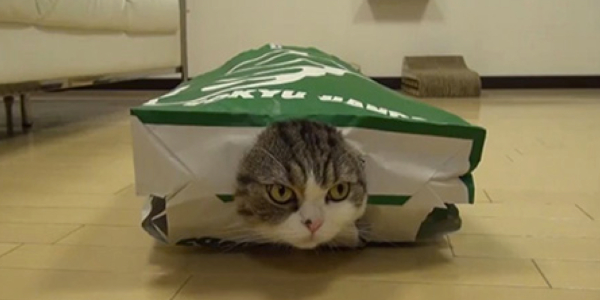

Maru Boxlover
Maru is a male Scottish Fold cat in Japan who has become popular on YouTube. As of April 2013, videos with Maru have been viewed over 200 million times. Videos featuring Maru have an average of 800,000 views each and he is mentioned often in print and televised media discussing Internet celebrities.
His owner, who does not show her face on camera or speak in the videos, posts videos under the account name 'mugumogu'. The videos are edited to include title cards in English and Japanese setting up the events of the video, and often show Maru playing in cardboard boxes, indicated by "I love a box!" in his introduction video.